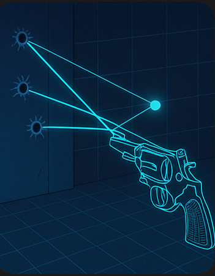

Centro Balistica Forense
Consulenti Tecnici Professionali – MEDA Balistica Forense
Contatti
Indirizzo: Via Appia, 192 – Montesarchio (BN)
Ottavio Menichelli: +39 349 8445445
Carmine D'Angelo: +39 324 9209359
Email PEC: menichelligioacchino@pec.it
Chi Siamo
Siamo un team di esperti in balistica forense, con anni di esperienza nel supporto a studi legali, forze dell’ordine e privati. Offriamo perizie balistiche accurate, ricostruzioni di traiettorie e consulenza tecnica per processi civili e penali.
Servizi Offerti
- Perizie balistiche forensi
- Ricostruzione di traiettorie e scene del crimine
- Analisi su armi da fuoco e munizioni
- Consulenza in ambito giudiziario
- Redazione di relazioni tecniche e CTU
Perizie Balistiche Forensi

Le perizie balistiche forensi rappresentano uno strumento fondamentale nell’ambito delle indagini giudiziarie. Il nostro team di esperti fornisce analisi dettagliate e scientifiche su armi da fuoco, munizioni e tracce balistiche, al fine di ricostruire eventi, traiettorie e dinamiche legate a fatti criminosi. Grazie a metodologie all’avanguardia e strumentazione certificata, offriamo rapporti tecnici precisi e validi in sede legale, supportando studi legali e forze dell’ordine con competenza e rigore professionale.
Ricostruzione di traiettorie e scene del crimine
La ricostruzione di traiettorie e scene del crimine è cruciale per comprendere la dinamica degli eventi criminali. Attraverso l’analisi delle tracce balistiche, della posizione dei corpi e dei reperti, ricreiamo fedelmente la scena del crimine. Questo servizio supporta le indagini fornendo una rappresentazione dettagliata e scientifica, indispensabile per le valutazioni tecnico-giudiziarie.